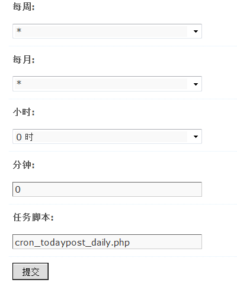
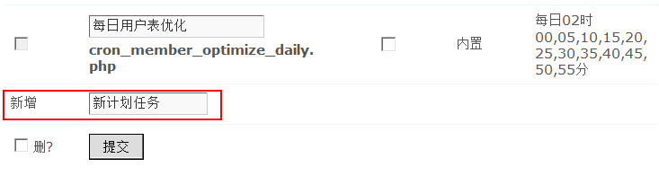
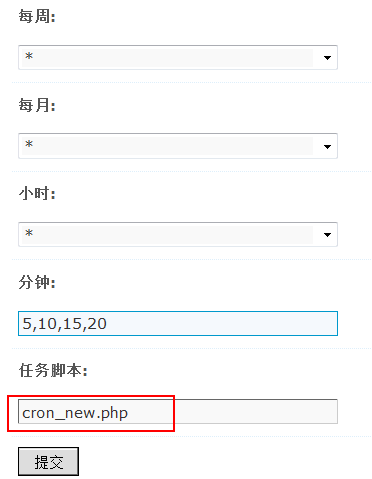
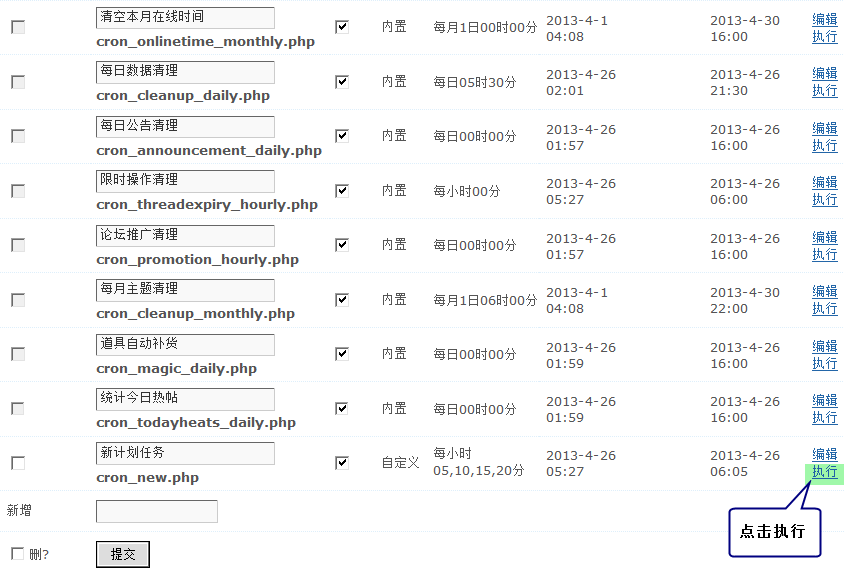

计划任务
计划任务是 Discuz! 提供的一项使系统在规定时间自动执行某些特定任务（如今日发帖数的更新、标签的更新、每月主题清理、道具自动补货等）的功能，在需要的情况下，您也可以方便的将其用于站点功能的扩展。
操作路径：【后台】=>【工具】=>【计划任务】
一、计划任务的编辑设置
系统内置了 17 个计划任务， 比增加了清理过期动态的计划任务，如果修改某一项计划任务，可以点击计划任务名称后面对应的“编辑”，进入设置界面，如图
每周：设置星期几执行本任务，“*”为不限制，本设置会覆盖下面的“每月”设定。
每月：设置每月的哪一天执行本任务，“*”为不限制。
小时：设置哪一小时执行本任务，“*”为不限制。
分钟：设置哪些分钟执行本任务，至多可以设置 12 个分钟值，多个值之间用半角逗号“,”隔开，留空为不限制。
任务脚本：设置本任务的执行程序文件名，请勿包含路径，程序脚本统一存放于 source/include/cron/ 目录中。
注意：除非非常了解 Discuz! 的结构，否则强烈建议不要修改默认设置。如需修改，请在修改之前记录原有设置，不当的设置将可能导致站点出现不可预期的错误。
如上图的设置为每日00时00分执行计划任务。
计划页面的首页还会显示计划任务是否可用、类型、上次执行时间和下次执行时间等。
二、添加计划任务
1、自己写好计划任务的程序，传到站点目录下的 /source/include/cron/ 下。
2、后台 => 工具 => 计划任务 “新增:”后填写计划任务名，如下图所示：
提交保存后，再编辑这个计划任务，如图
3、填写上已上传到 /source/include/cron/ 中脚本的文件名，提交。
4、再到计划任务列表里面勾选刚设置好的计划任务“可用”的选择框，如图
自定义的计划任务是可以删除的，系统内置的计划任务不可以删除。
三、计划任务的执行
在设置的计划任务执行的时刻，如果有人访问站点，计划任务就会执行；如果那个时刻无人访问站点，则直到有人访问时才执行计划任务。
如果站点的计划任务偶尔没有正常执行，也可以手动执行计划任务即点击相应的计划任务后面的执行，相应的计划任务将立即执行，如图
注意：
1、计划任务和其他功能不同，本功能中完全按照站点系统默认时差对时间进行设定和显示，而不会依据某一用户或管理员的时差设定而改变显示或设置的时间值。
2、计划任务是与系统核心紧密关联的功能特性，不当的设置可能造成站点功能的隐患，严重时可能导致站点无法正常运行，因此请务必仅在您对计划任务特性十分了解，并明确知道正在做什么、有什么样后果的时候才自行添加或修改任务项目。